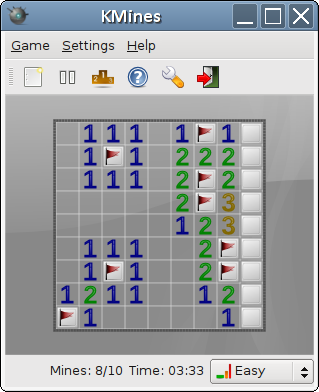

Mine Sweeper The Game
Campo minado é um popular jogo de
computador para um jogador. Foi inventado por Robert Donner em 1989 e tem como objectivo revelar um campo de minas sem que alguma seja detonada.
Este jogo
tem sido reescrito para as mais diversas plataformas, sendo a sua versão mais
popular a que vinha nativamente
nas edições anteriores ao Windows 10.

Minesweeper has its origins in the earliest mainframe games of the 1960s and 1970s. The earliest ancestor
of Minesweeper was Jerimac Ratliff's Cube. The basic gameplay style
became a popular segment of the puzzle video
game genre during the 1980s, with titles such as Mined-Out (Quicksilva,
1983), Yomp (Virgin Interactive, 1983), and Cube. Cube was succeeded by
Relentless Logic (or RLogic for short), by
Conway, Hong, and Smith, available for MS-DOS as early as 1985; the
player took the role of a private in the United States Marine Corps, delivering an important message to the
U.S. Command Center. RLogic had greater similarity to Minesweeper than to Cube in concept,
but a number of differences exist:
- In RLogic, the player must navigate through the minefield from the top left right angled corner to
the bottom right angled corner (the Command Center).
- It is not necessary to clear all non-mine squares. Also, there is no mechanism for marking mines or counting
the number of mines found.
- The number of steps taken is counted. Although no high score functionality is included, players could
attempt to beat their personal best score for a given number of mines.
- Unlike Minesweeper, the size of the minefield is fixed. However, the player may still specify the
number of mines.
- Because the player must navigate through the minefield, it is sometimes impossible to win — namely,
when the mines block all possible paths.
The gameplay mechanics of Minesweeper are included in a variety of other software titles, including:
- The mini-game Vinesweeper implemented into the MMORPG RuneScape; in this
iteration (written by Jagex developer Danny J), the
Minesweeper gameplay is given a large multiplayer aspect and the "game board" adopts a continually
resetting timer. This allows for a never-ending game of Minesweeper where the skill is assessed in points
rather than "game completion".
- The PC game Mole Control (developed by Remode); in this game, the Minesweeper mechanic is
integrated into a puzzle adventure game based in a village called Molar Creek, which has been overrun with
exploding moles. The player acts as the local inventor's assistant, who is tasked with clearing the village
of exploding moles. A time attack mode, called the Molar Creek Annual Mole Control competition, is also
available.